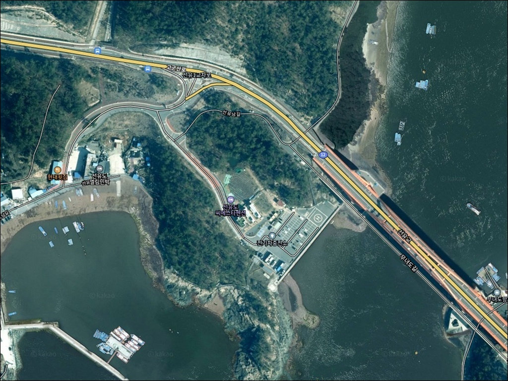
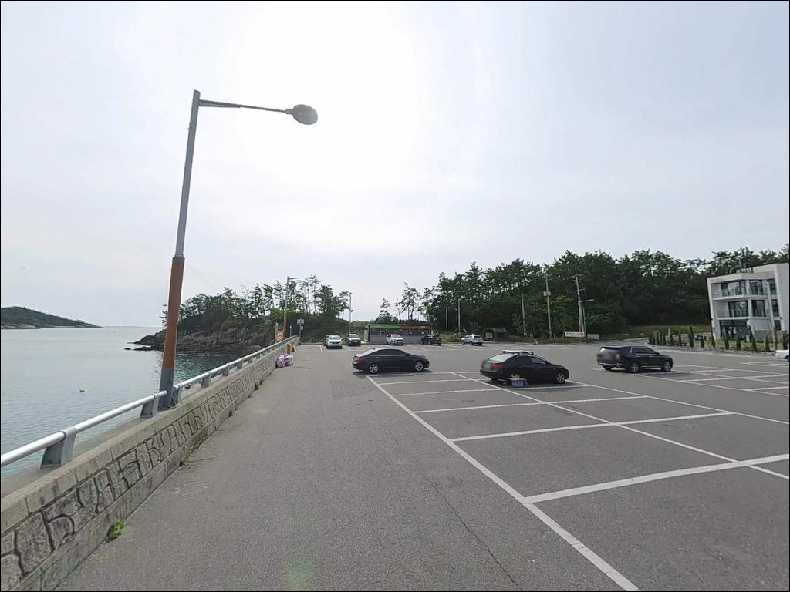
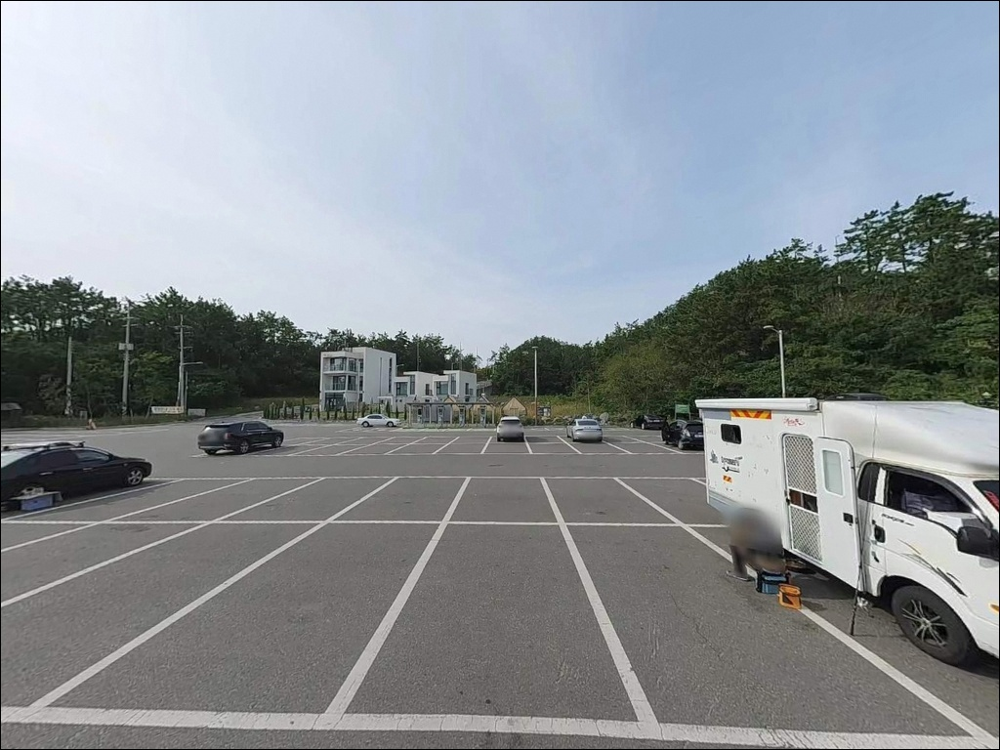
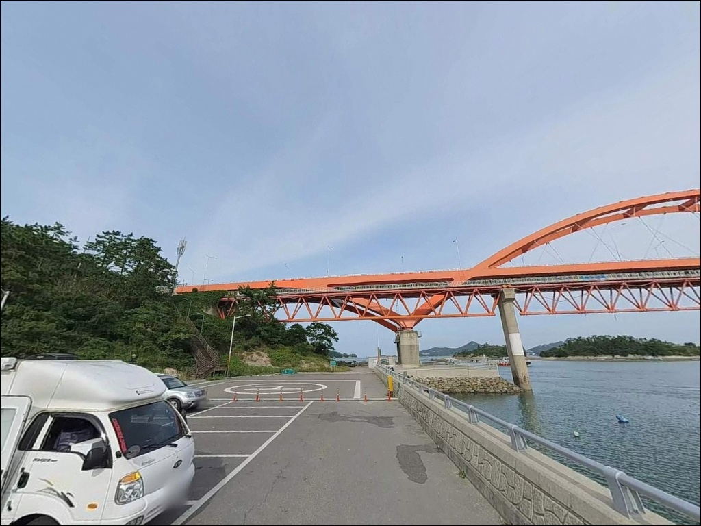
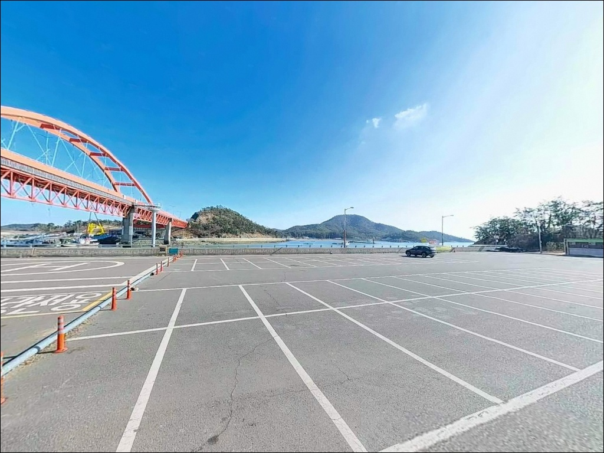
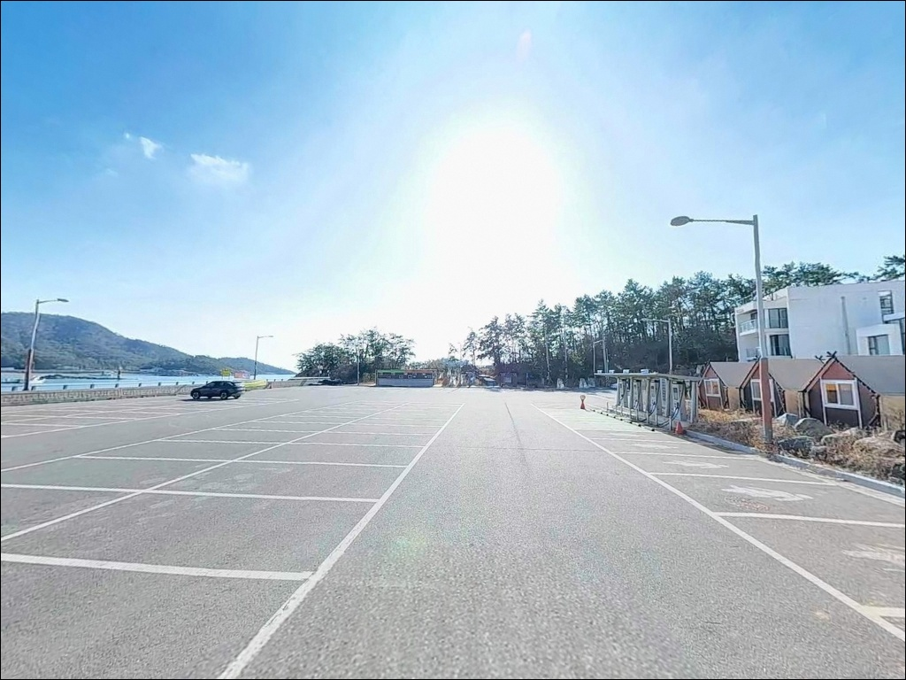
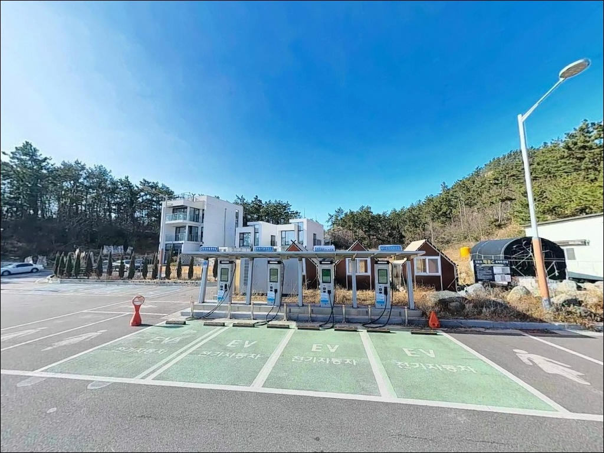
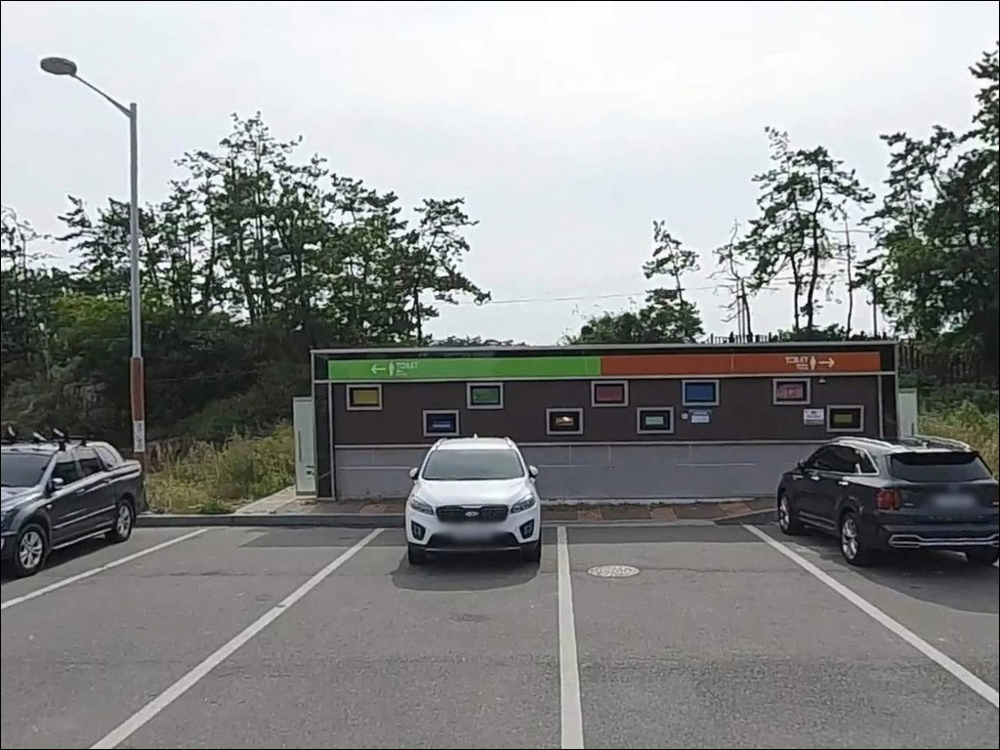
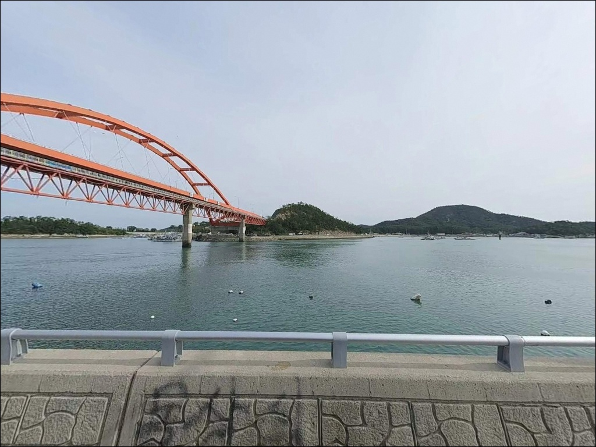

선유도 물량장 공영주차장, 선유도 전북 군산시 바다의 여운이 오래 남는 차박, 낚시 감성 포인트
이 페이지에는 광고(제휴 링크 포함)가 있으며, 광고 링크를 통해 구매하면 운영자가 판매 수익 또는 수수료를 받을 수 있습니다. 포인트 사진: 카카오맵 스카이뷰·로드뷰. 이 페이지의 지도·사진 이미지는 카카오맵의 실제 서비스 이미지와 다를 수 있습니다.


포인트 안내
선유도 물량장 공영주차장
전북 군산시 옥도면 선유도리 353
서해 조수 간만의 차이는 낚시 자리 선택보다
먼저 결정해야 할 조건입니다.
선유도 물량장 인근은 들물 타이밍에
조류가 살아나고 어종 활성도가 올라오는 구조여서,
물때 확인 없이 진입하면 가장 좋은 시간대를
그냥 흘려보내게 됩니다.
전북 군산시 옥도면 선유도리,
고군산군도의 중심 섬 선유도에 위치한
물량장 공영주차장은
선유대교를 건너자마자 차량으로 접근 가능한
서해 낚시 거점 포인트입니다.
물량장과 선착장이 인접해 있어
주차에서 낚시 자리까지 동선이 짧고
복수의 낚시 방식을 현장에서 시도해 볼 수 있는 구조입니다.
이 글은 선유도 물량장 공영주차장의
진입 동선, 낚시 지형 여건, 차박 조건,
물때 판단 기준, 주변 대안 포인트에 집중합니다.
조황 단정이나 특정 어종 보장은
이 글의 범위에 포함되지 않습니다.

1. 진입 동선과 포인트 접근성
선유도는 고군산군도에서 가장 중심이 되는 섬으로,
신시도 방향에서 선유대교를 건너면
차량으로 바로 진입할 수 있습니다.
선유도리 물량장 공영주차장까지
고군산로를 따라 이동하는 구조이며,
별도의 비포장 구간이나 급경사 없이
일반 도로 수준의 접근이 가능한 편입니다.
물량장 특성상 선착장 운영에 필요한
넓은 회차 공간이 갖춰져 있어
SUV나 픽업트럭 수준의 차량도
진입·회차에 큰 어려움이 없습니다.
단, 기도등대 방파제 방향 진입로는
폭이 좁다는 후기가 있어
카라반이나 긴 캠핑 트레일러는
사전에 경로를 확인하는 편이 좋습니다.
주차는 물량장 인근 공영주차장을 기본으로 활용합니다.
전기차 충전시설이 포함된 구조로 운영 중이며,
성수기 주말에는 관광객 차량으로 혼잡해지는
경우가 있어
이른 아침 진입이 주차 확보에 유리합니다.

2. 차박 환경과 야간 체류 여건
선유도 물량장 인근은 관광지와 마을 생활권이
겹치는 구역입니다.
야간에도 어선 활동이 이루어질 수 있어
선착장 구역에서 차량을 세우고 머무는 차박 환경은
조용함을 기대하기 어려운 구조입니다.
낚시 후 잠깐 휴식을 취하는 출조 베이스 용도로는
적합하지만, 여유 있는 차박 여행을 원한다면
별도 장소를 검토하는 편이 낫습니다.
가로등을 포함한 기본 조명은 일부 존재하는 구조여서
야간 낚시 동선 자체가 어둡지는 않지만,
반대로 프라이버시 확보는 제한적입니다.
서해 특성상 바람이 강해지는 날씨에는
외항 방향으로 노출된 구간에서
파도 소음과 바람의 영향을 받을 수 있어
기상 예보 확인을 출발 전에 반드시 해야 합니다.


3. 주변 편의시설 및 인프라 현황
선유도는 고군산군도의 관광 중심지여서
섬 내에 식당과 민박이 다수 운영 중입니다.
물량장 공영주차장 인근에서
도보로 이동 가능한 거리 안에
기본 편의시설을 이용할 수 있습니다.
식수와 간식류는 육지에서 미리 준비하는 편이
성수기 혼잡을 피하는 데 유리합니다.
물량장 공영주차장에는 전기차 급속충전시설이
설치되어 있으며, 24시간 운영하는 것으로
등록되어 있습니다.
주차 요금은 운영 시기와 지자체 방침에 따라
변경될 수 있으므로
방문 전 군산시 또는 현지 안내판을 확인하는 것이
기본 준비입니다.
응급 상황 시 선유도 보건지소가
섬 내에 운영 중이지만,
대형 의료시설까지는 거리가 상당합니다.
기본 비상약품과 구급용품은 미리 챙겨오는 편이 좋습니다.

4. 진입 전 반드시 챙겨야 할 준비사항
선유도 물량장 방문 전에 가장 먼저 확인할 것은
물때입니다.
서해는 조수 간만의 차이가 크기 때문에
바다타임에서 옥도면 기준 물때를 확인하고
들물 시작 1~2시간 전에 자리를 잡는 것이
이 포인트에서 시간을 가장 잘 쓰는 방법입니다.
사리 전후 조류가 강해지면
채비가 빠르게 쓸려나가는 상황도 발생합니다.
고군산군도는 기상 변화가 빠른 해역입니다.
기상청 해상예보는 출발 전날과 당일 아침에
두 번 확인하는 것이 기본입니다.
암초 지형이 있는 구간에서는 채비 손실이 발생하므로
여분 채비와 봉돌은 여러 무게로 준비해 두는 편이 좋습니다.
서해 바닥층 탐색 시 조류 세기에 맞춰
봉돌 무게를 조정해야 하기 때문입니다.
물량장과 선착장은 어선이 운용되는 공간입니다.
어선 이동 동선과 계류 어구에 닿지 않도록
자리를 잡아야 하며,
야간 낚시 시에는 헤드랜턴과 구명조끼가 필수입니다.
선유도는 관광객이 많은 섬이므로
쓰레기 전량 수거는 기본 매너입니다.

5. 서해 섬 내항, 이 지형에서 기대할 수 있는 낚시 조건
선유도 물량장은 고군산군도의 섬 사이 수로를 끼고 있는
내항 구조입니다.
물량장 앞 수심은 어선 접안에 필요한 수준으로
준설된 구간이 있어
선착장 끝단에서 수심이 급변하는 구간이 형성됩니다.
이 수심 변화 구간이 어종이 머무는 경계선 역할을 합니다.
내항 구조상 조류 흐름은 외항보다 완만하지만,
무녀도·장자도와 이어지는 섬 사이 수로에서
조류 흐름이 물량장 방향으로 유입되는 형태입니다.
들물 타이밍에 이 조류 흐름이 살아나면
내항 특성상 찌와 채비가 안정되는 조건이 갖춰집니다.
원투낚시와 생활 루어가 이 지형 구조에 잘 맞는 방식입니다.
바닥은 모래·뻘 혼합 구조로,
선착장 석축 주변에는 잔돌과 암초가 있을 수 있습니다.
물량장 앞 개방 구간은 원투 채비로 바닥을 탐색하는 방식이 어울리고,
석축 주변은 루어 채비로 바닥층을 느리게 훑는 방식이 맞습니다.
고군산군도 일대 조황은 출조 전에 반드시 검색해 두시기 바랍니다.


6. 포인트 지형에 어울리는 낚시 스타일
이 포인트에서 가장 기본이 되는 낚시는
원투낚시입니다.
물량장 앞 개방 구간은 장거리 캐스팅이 가능하며,
모래·뻘 혼합 바닥에서
붕장어와 우럭을 노리는 방식이 지형 조건과 잘 맞습니다.
들물 초반부터 만조 전후 타이밍을 노리는 것이
서해 원투낚시의 기본 전략입니다.
에깅(갑오징어·주꾸미)도 시기에 맞춰 시도해 볼 만합니다.
선유도 일대 고군산군도는
가을철 갑오징어와 주꾸미 조황으로 알려진 해역입니다.
물량장 끝단과 선착장 주변 수심 변화 구간이
에기를 운용하기에 자연스러운 자리가 됩니다.
에깅이란 갑오징어·주꾸미를 대상으로
에기(인조 미끼)를 사용하는 루어낚시 방식입니다.
루어낚시(지그헤드·웜)도 석축 구간에서 활용할 수 있습니다.
선착장 석축과 물량장 가장자리 바닥층을
느리게 탐색하는 방식으로
우럭과 쥐노래미를 노려볼 수 있습니다.
야간 라이트게임으로 활용하면
가로등 아래 밝고 어두운 경계 구간이
포인트가 됩니다.

7. 대안 포인트와 플랜 B 동선
물량장 주변이 여의치 않을 때
가장 먼저 이동할 곳은
선유3구 방파제(기도등대 방파제)입니다.
물량장 공영주차장에 주차 후 도보로 접근할 수 있으며,
외항 석축 구조로 갑오징어·우럭·쥐노래미 낚시 후기가
복수로 확인되는 포인트입니다.
방파제 외측에 말풀이 형성되는 구간이
에깅 포인트로 유효합니다.
무녀도 방향으로 이동하면
무녀2구 선착장과 무녀도 남들 포인트에
접근할 수 있습니다.
조류가 빠른 구간이라는 특성이 있어
루어낚시와 에깅에 어울리는 지형 조건이 갖춰져 있습니다.
선유도에서 무녀도까지 차량으로 이동 가능하여
포인트 변경 동선이 짧은 편입니다.
장자도 방향도 대안입니다.
장자도 공영주차장에 주차 후
대장도 방향으로 도보 이동하면
갯바위 구간에 접근할 수 있습니다.
차박 여건이 선유도 물량장보다
주차 공간과 조용함 면에서 나을 수 있어
차박 병행 출조를 계획한다면 함께 검토해 볼 만합니다.

고군산군도 낚시 거점으로
선유도 물량장을 활용하는 방법
원투낚시와 에깅을 함께 즐기는 낚시인이라면
선유도 물량장 공영주차장은
고군산군도 탐색의 출발점으로 잘 맞는 자리입니다.
주차에서 낚시 자리까지 동선이 짧고,
인근 선유3구 방파제와 무녀도까지
이동이 편리해 복수 포인트를 하루에
돌아보기 좋은 구조입니다.
반면 조용한 차박을 메인으로 생각하거나
성수기 주말에 방문하는 일정이라면
물량장 공영주차장은 기대에 못 미칠 수 있습니다.
물때 확인, 이른 시간대 진입, 채비 사전 준비,
이 세 가지를 갖추고 들어온다면
고군산군도 서해 낚시 특유의 들물 활성을
제대로 경험할 수 있는 포인트입니다.
서해 물때 흐름에 맞춰 자리를 잡고,
갑오징어 에기나 원투 채비를 물속으로 보내며
섬 사이 수로 바람을 맞는 하룻밤은
고군산군도만의 감각으로 남습니다.